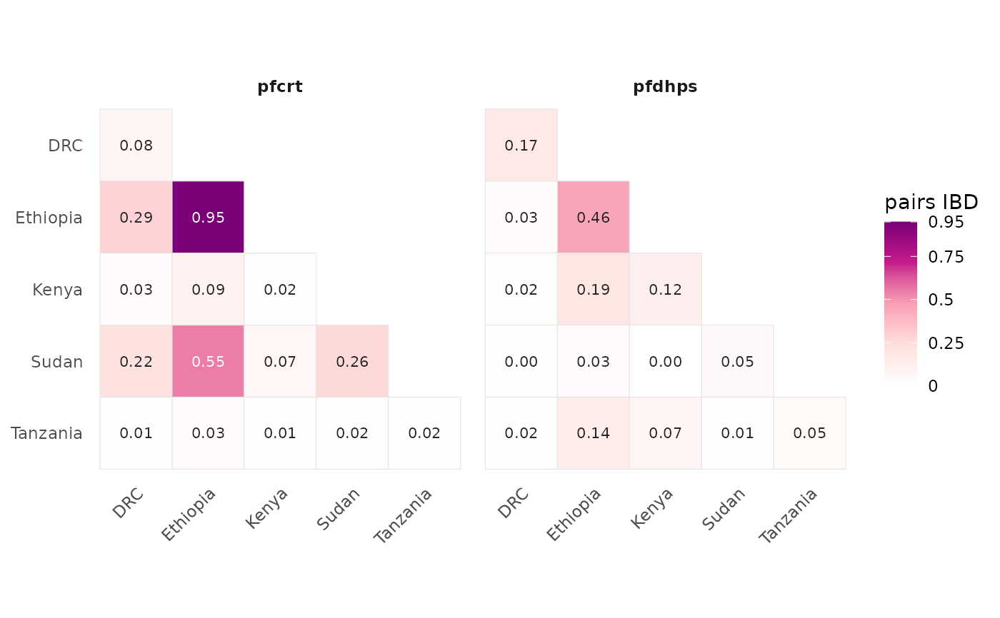

IBD "triangle" panels for genes or specific SNPs
Source:R/visualize.R
plot_pairwise_ibd_for_genes.RdDraws a group-by-group IBD-sharing triangle per feature: a gene (per-SNP pairwise IBD for SNPs falling strictly inside the gene interval, aggregated) or a specific SNP (the sharing at that single position). One facet per feature – use it to ask whether a gene or locus is itself shared between groups.
Usage
plot_pairwise_ibd_for_genes(
x,
genes = NULL,
snps = NULL,
group = NULL,
within = 0,
agg = c("mean", "median", "max"),
individual = FALSE,
label = TRUE,
digits = 2,
ncol = NULL,
trans = "identity",
colors = NULL,
limits = NULL,
fill_scale = NULL,
colours = NULL
)Arguments
- x
An IbdResults object. Gene triangles use its IBD
blocks/gene_overlaptable if present, else thepairwise_groupper-SNP table.- genes
Gene names to include from the track (default: all; case-insensitive). Ignored if only
snpsis given.- snps
Specific SNPs to draw, as
"chr:pos"ids (e.g."Pf3D7_07_v3:403222") or a data frame withchr,pos(and optionalname). Each is one facet.- group
For block-based overlap, the metadata column defining the groups (default: the first non-
samplecolumn of the object'smeta).- within
Pad each gene interval by this many bp on both sides (default
0), on either path: it widens which IBD blocks count as overlapping the gene, and on the SNP fallback it widens which SNPs are taken as the gene's. Raising it is what makes the SNP fallback usable on a sparse panel, where a short gene may contain no genotyped SNP at all. Features named throughsnpsare never padded – naming one variant asks for that variant, not its neighbourhood.- agg
For the SNP fallback, how a gene's value aggregates its in-gene SNPs:
"mean"(default),"median", or"max".- individual
If
TRUE, return a named list of one-triangle plots (one per feature, e.g. to write a multi-page PDF) with the legend tucked into the empty upper triangle; ifFALSE(default), one faceted grid plot.- label
Draw the value in each tile.
- digits
Decimal places for the tile labels.
- ncol
Facet columns for the grid (default: ggplot2 chooses).
- trans
Fill-scale transform, e.g.
"identity"(default),"log2","sqrt".- colors, colours
Optional colour ramp for the fill (default: the pairwise-sharing ramp).
- limits
Fill limits.
NULL(default) lets each plot scale to its own values;"shared"pins every feature to the range across all of them, which makes the pages fromindividual = TRUEcolour-comparable; or givec(lo, hi)explicitly (values outside are squished). A faceted grid already shares one scale across its panels.- fill_scale
Optional ggplot2 fill scale that fully overrides the above.
Details
Genes come from the genes track on the IbdResults object and membership is
strict: a SNP belongs to a gene only when its position is inside the interval (no
flanking). Target individual loci with snps when a specific variant matters more
than a whole gene.
How a gene's sharing is measured. When the object carries IBD blocks
(ibd_results(blocks=, meta=)) or a precomputed overlap table (gene_overlap=, from
plasgenomicsutils ibd_gene_overlap), a gene's cell is the fraction of pairs whose IBD
block overlaps the gene interval – so a pair counts when it shares a segment
spanning the gene even with no genotyped SNP inside it (see gene_ibd_overlap()).
Without blocks it falls back to aggregating the pairwise IBD of SNPs strictly inside the
gene. snps= always uses the per-SNP path (a single locus is a point, not an interval).
Examples
ibd <- example_ibd_results()
# `within` widens the selection: the example panel is sparse, and a real gene often
# carries no SNP of its own, so nearby ones stand in for it
plot_pairwise_ibd_for_genes(ibd, genes = c("pfcrt", "pfdhps"), within = 20000)
